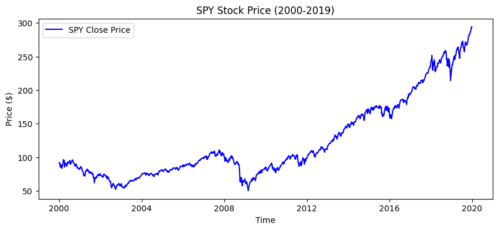
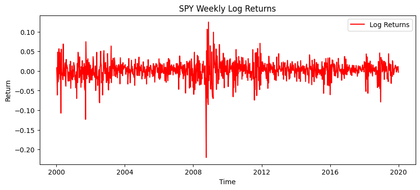
This report examines weekly SPY log returns from 2000 to 2019 to assess whether the data support a regime-switching description of volatility. Annualised rolling volatility ranges from roughly 10% to 54%, excess kurtosis is [DEĞER], and while raw returns show no significant autocorrelation, absolute and squared returns remain persistent for many weeks. The variance is therefore time-varying and persistent while the mean is not, pointing to a two-state model with a common mean and switching variance; whether such regimes can be detected in real time is left to the remainder of the project.
The purpose of this experiment is to examine and ascertain whether the returns of the SPY ETF exhibit the statistical properties required to justify the application of a regime-switching model.
| Source | Yahoo Finance (yfinance v_), retrieved _ |
| Instrument | SPDR S&P 500 ETF Trust (SPY), dividend- and split-adjusted |
| Period | 2000-01-01 – 2019-12-31 |
| Frequency | Weekly, last close of each week ending Friday (W-FRI) |
| Observations | ___ |
SPY tracks the S&P 500 and serves here as a proxy for the broad U.S stock equity market. Prices adjusted so that ex-dividend dates are not recorded as losses.
The 2000 start date gives the sample two independent crisis (dot-com 2000-2002, global financial crisis 2007-2009) with only one , the high-variance state would be identifed from a single event. Data from 2020 onward is reserved as an out-of-sample test set.
This methodology section outlines the primary mathematical frameworks and techniques employed in this study.
\[ r_t = \ln\!\left(\frac{P_t}{P_{t-1}}\right) \]
Log returns are additive across periods: a multi-week return is a sum rather than a product. They are also unbounded below, whereas simple returns cannot fall below −1. The Gaussian is therefore a coherent null model for log returns — a null this report proceeds to test.
Volatility is measured as the standard deviation of returns over a trailing 26-week window,
\[ \hat{\sigma}_t = \sqrt{\frac{1}{25}\sum_{i=0}^{25}\left(r_{t-i}-\bar{r}_t\right)^2} \]
and annualised by \(\sqrt{52}\), which assumes returns are uncorrelated across weeks. The window length trades responsiveness against estimation noise: shorter windows react faster but are unstable, longer windows smooth over short episodes. Section 6 revisits this choice.
\[ \text{Kurt}_{\text{excess}} = \frac{\mathbb{E}\left[(r-\mu)^4\right]}{\sigma^4} - 3 \]
The subtraction sets the Gaussian reference to zero; positive values indicate heavier tails. Estimates use the bias-adjusted sample estimator implemented in pandas.Series.kurtosis.
\[ \rho_k = \frac{\operatorname{Cov}(r_t,\, r_{t-k})}{\operatorname{Var}(r_t)} \]
The Autocorrelation Function (ACF) quantifies the historical memory of a time series. The ACF of raw returns captures both the direction and the magnitude of price fluctuations. Little or no autocorrelation in raw returns indicates an absence of linear dependence, which is not the same as independence.
Absolute and squared returns are used as proxies for volatility because they isolate the magnitude of price movements from their direction. Comparing their autocorrelation with that of raw returns therefore separates memory in the direction of returns from memory in their magnitude.
These two charts illustrate the price and log returns. The clustering of fluctuations during specific time intervals on the log return plot should draw attention. There is a strong connection between these underlying drivers and regime switches.


For each observation, the weekly variance is estimated using a 26-week rolling window that includes the current observation and the preceding 25 weekly returns. Each weekly standard deviation is then multiplied by \(\sqrt{52}\) to calculate the annualized volatility. Volatility clustering is clearly visible in the plot.
Maximum annual volatility:0.5414837284317862, Maximum annual volatility date: 2009-03-21 00:00:00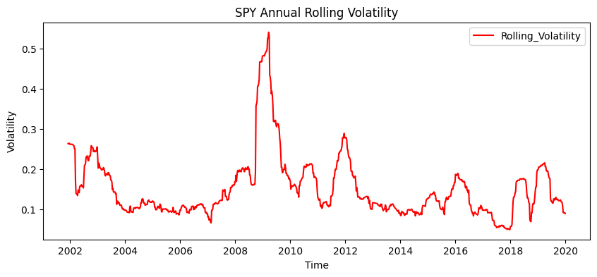
In financial modeling, asset returns are often assumed to follow a normal distribution. The first chart compares the empirical distribution of log returns to a theoretical Gaussian distribution. While they may appear similar at the center, financial data typically exhibits excess kurtosis. To analyze the extreme events, the second chart applies a logarithmic scale to the y-axis. This log-scale plot clearly demonstrates that extreme market movements (fat tails) occur much more frequently in the real market than a normal distribution would predict.
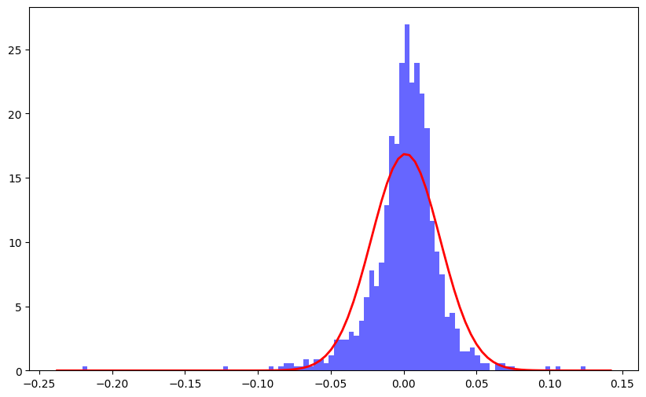
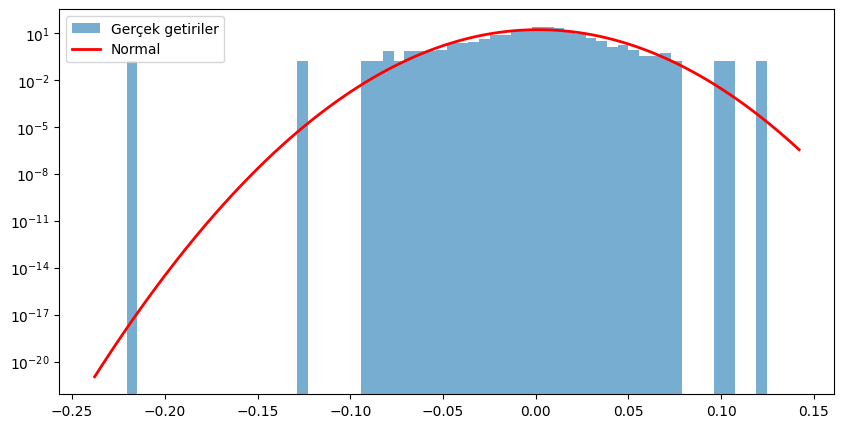
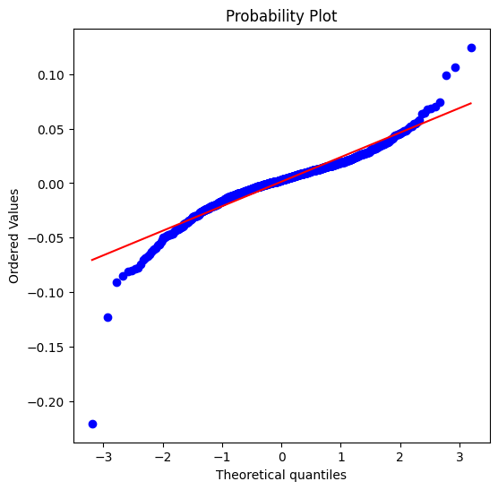
Excess Kurtosis Value: 10.75These three ACF plots reveal a fundamental characteristic of financial markets. The first plot shows that raw log returns have almost zero autocorrelation, meaning the direction of price movements is memoryless. However, the plots for absolute and squared returns display significant positive autocorrelation. This clearly demonstrates volatility clustering: large movements are followed by large movements. This persistent memory in volatility is exactly why a Hidden Markov Model (HMM) is required to detect underlying market regimes.
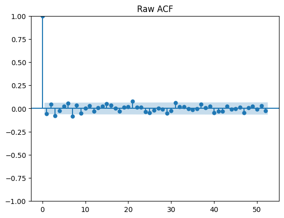
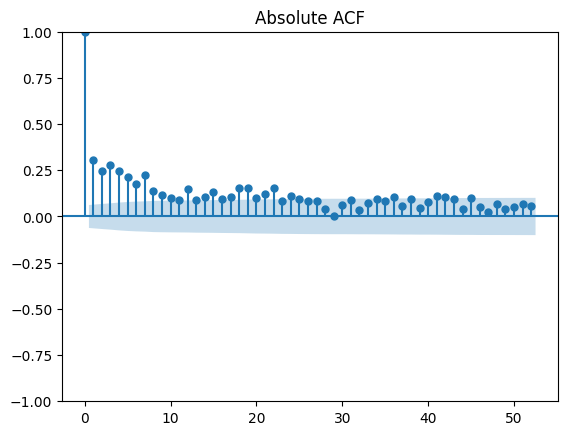
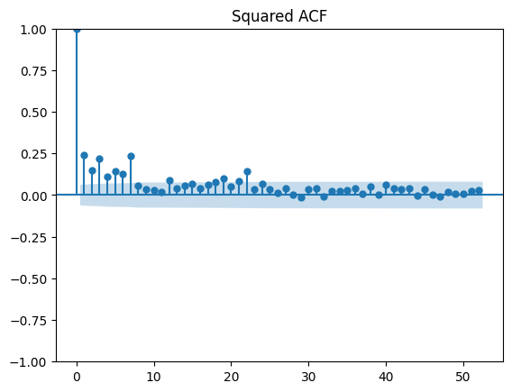
This final section evaluates the long-term performance and downside risk of the asset. The Wealth Index illustrates the cumulative growth over time. Conversely, the Drawdown chart measures the percentage decline from historical peaks. The Maximum Drawdown is a critical risk metric, highlighting the worst-case capital loss an investor would have experienced during the observed period.
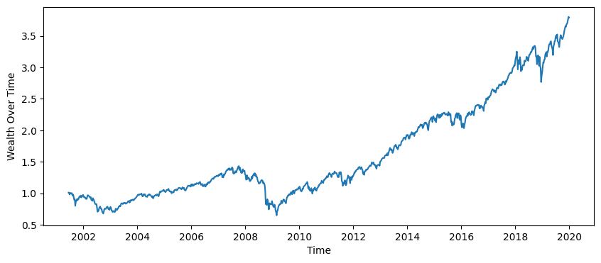
Peak Value of SPY: 3.8040409618783135
Date of Peak Value of SPY: 2019-12-21 00:00:00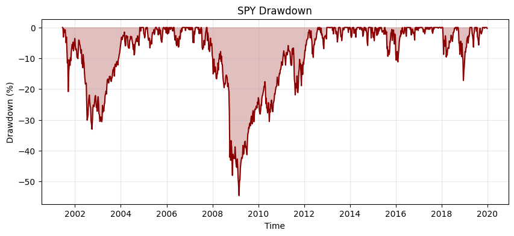
Maximum Drawdown: -54.61%
Maximum Drawdown Date: 2009-02-28 00:00:00Variance of logarithmic returns tends to change unlike the mean. As illustrated in Figure 4.1, return data oscillate around zero. Figure 4.2 demonstrates that the variance changes over time.
Time-varying variance naturally leads to excess kurtosis and fat tails in the empirical distribution, causing traditional risk models that assume a single Gaussian distribution to underestimate the probability of a market crash. Crucially, this fat tail is not an anomaly. A mixture of two normal distributions with distinct variances inherently produces fat tails. This is strongly pointing toward an underlying two-state market structure.
The autocorrelation function of raw returns remains within the confidence bands (Figure 4.4), indicating that the mean return does not need to transition between regimes. Conversely, absolute and squared returns suggest that volatility is highly regime dependent. Therefore, a framework utilizing a common mean paired with a switching variance emerges as the most parsimonious model that is consistent with observed stylized facts.
The drawdown analysis (Figure 4.5) indicates why the high-volatility regime is important. Nearly all of the capital losses are in that period. However, these rolling variance metrics are inherently backward-looking; for instance, a 26-week rolling window often peaks only after the market has already bottomed. This inherent lag in traditional metrics leads to the ultimate question: can these high-risk market regimes be accurately detected in real-time?
Baselines against which any regime model must be judged: constant variance, a rolling-volatility threshold, and an EWMA estimator, all fitted on the training period only. Alongside these, the Gaussian log-likelihood will be implemented and maximised directly, as groundwork for the Markov-switching model.